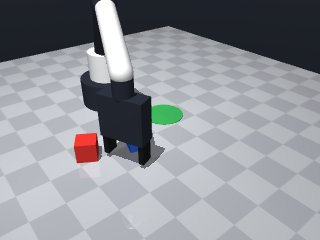
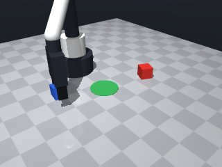
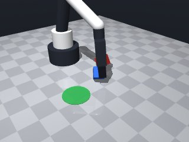
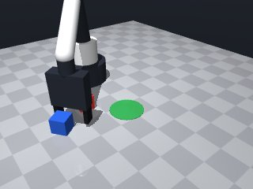
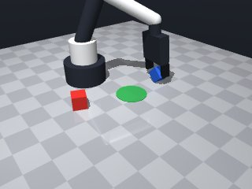
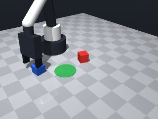
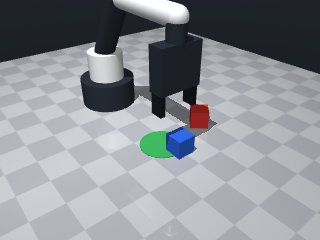
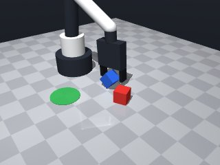

0 demonstrations · reward: gt · perception: real · 8 practice episodes in 1 rounds
Safety layer: 0 halts, 0 clamps.
| role | model | calls | tokens in | tokens out | USD |
|---|---|---|---|---|---|
| coder | nvidia/nemotron-3-super-120b-a12b | 1 | 1,670 | 1,489 | $0.0018 |
| summarizer | nvidia/Nemotron-3_5-Lightning | 0 | 0 | 0 | $0.0000 |
| compute | local | 92 s | $0.0000 | ||
| total | 1 | 1,670 | 1,489 | $0.0018 |
- First version: perceive cube and target, move above cube, descend to grasp height, grasp, lift, move above target, descend to release height, release. - Use safe Z for travel, low Z for grasp/release. - Simple retry on grasp failure (max 2 attempts). - No compensation for perception noise yet; will add verification in later iterations.
--- round_0/skill.py +++ round_1/skill.py @@ -0,0 +1,90 @@ +import math + +def run(robot): + # Constants for motion + SAFE_Z = 0.08 # height for safe travel + GRASP_Z = 0.02 # height to attempt grasp (tool point) + RELEASE_Z = 0.02 # height to release + SPEED_TRAVEL = None # use default speed + SPEED_SLOW = 0.05 # slow speed near objects + MAX_GRASP_ATTEMPTS = 2 + + # Helper to safely move, catching MotionError + def safe_move_to(x, y, z, yaw=None, speed=None): + try: + return robot.move_to(x, y, z, yaw=yaw, speed=speed) + except Exception as e: # MotionError is subclass of Exception + robot.log("Move failed:", e) + return {"ok": False} + + # 1. Observe scene to get cube and target poses + obs = robot.observe() + cube_info = obs["objects"].get("blue_cube") + target_info = obs["fixtures"].get("target") + if not cube_info or not target_info: + robot.log("Missing cube or target in observation") + return False + + cube_pos = cube_info["pos"] + cube_yaw = cube_info["yaw"] + target_pos = target_info["pos"] + + # 2. Move above the cube + res = safe_move_to(cube_pos[0], cube_pos[1], SAFE_Z, yaw=cube_yaw, speed=SPEED_TRAVEL) + if not res["ok"]: + robot.log("Failed to move above cube") + return False + + # 3. Descend to grasp height (slow) + res = safe_move_to(cube_pos[0], cube_pos[1], GRASP_Z, yaw=cube_yaw, speed=SPEED_SLOW) + if not res["ok"]: + robot.log("Failed to descend to grasp height") + return False + + # 4. Attempt grasp (with retries) + grasped = False + for _ in range(MAX_GRASP_ATTEMPTS): + if robot.grasp(): + # Verify we are holding something + if robot.holding() is not None: + grasped = True + break + robot.log("Grasp attempt failed, retrying") + # Slightly re-open and try again + robot.release() + robot.wait(0.1) + + if not grasped: + robot.log("Could not grasp cube after attempts") + return False + + # 5. Lift cube to safe height + res = safe_move_to(cube_pos[0], cube_pos[1], SAFE_Z, yaw=cube_yaw, speed=SPEED_SLOW) + if not res["ok"]: + robot.log("Failed to lift cube") + return False + + # 6. Move above target zone + res = safe_move_to(target_pos[0], target_pos[1], SAFE_Z, yaw=None, speed=SPEED_TRAVEL) + if not res["ok"]: + robot.log("Failed to move above target") + return False + + # 7. Descend to release height (still over target) + res = safe_move_to(target_pos[0], target_pos[1], RELEASE_Z, yaw=None, speed=SPEED_SLOW) + if not res["ok"]: + robot.log("Failed to descend to release height") + return False + + # 8. Release the cube + robot.release() + robot.wait(0.2) # let it settle + + # 9. Retreat to safe height + res = safe_move_to(target_pos[0], target_pos[1], SAFE_Z, yaw=None, speed=SPEED_TRAVEL) + if not res["ok"]: + robot.log("Failed to retreat after release") + return False + + # Task considered done; success evaluation is external + return True








import math
def run(robot):
# Constants for motion
SAFE_Z = 0.08 # height for safe travel
GRASP_Z = 0.02 # height to attempt grasp (tool point)
RELEASE_Z = 0.02 # height to release
SPEED_TRAVEL = None # use default speed
SPEED_SLOW = 0.05 # slow speed near objects
MAX_GRASP_ATTEMPTS = 2
# Helper to safely move, catching MotionError
def safe_move_to(x, y, z, yaw=None, speed=None):
try:
return robot.move_to(x, y, z, yaw=yaw, speed=speed)
except Exception as e: # MotionError is subclass of Exception
robot.log("Move failed:", e)
return {"ok": False}
# 1. Observe scene to get cube and target poses
obs = robot.observe()
cube_info = obs["objects"].get("blue_cube")
target_info = obs["fixtures"].get("target")
if not cube_info or not target_info:
robot.log("Missing cube or target in observation")
return False
cube_pos = cube_info["pos"]
cube_yaw = cube_info["yaw"]
target_pos = target_info["pos"]
# 2. Move above the cube
res = safe_move_to(cube_pos[0], cube_pos[1], SAFE_Z, yaw=cube_yaw, speed=SPEED_TRAVEL)
if not res["ok"]:
robot.log("Failed to move above cube")
return False
# 3. Descend to grasp height (slow)
res = safe_move_to(cube_pos[0], cube_pos[1], GRASP_Z, yaw=cube_yaw, speed=SPEED_SLOW)
if not res["ok"]:
robot.log("Failed to descend to grasp height")
return False
# 4. Attempt grasp (with retries)
grasped = False
for _ in range(MAX_GRASP_ATTEMPTS):
if robot.grasp():
# Verify we are holding something
if robot.holding() is not None:
grasped = True
break
robot.log("Grasp attempt failed, retrying")
# Slightly re-open and try again
robot.release()
robot.wait(0.1)
if not grasped:
robot.log("Could not grasp cube after attempts")
return False
# 5. Lift cube to safe height
res = safe_move_to(cube_pos[0], cube_pos[1], SAFE_Z, yaw=cube_yaw, speed=SPEED_SLOW)
if not res["ok"]:
robot.log("Failed to lift cube")
return False
# 6. Move above target zone
res = safe_move_to(target_pos[0], target_pos[1], SAFE_Z, yaw=None, speed=SPEED_TRAVEL)
if not res["ok"]:
robot.log("Failed to move above target")
return False
# 7. Descend to release height (still over target)
res = safe_move_to(target_pos[0], target_pos[1], RELEASE_Z, yaw=None, speed=SPEED_SLOW)
if not res["ok"]:
robot.log("Failed to descend to release height")
return False
# 8. Release the cube
robot.release()
robot.wait(0.2) # let it settle
# 9. Retreat to safe height
res = safe_move_to(target_pos[0], target_pos[1], SAFE_Z, yaw=None, speed=SPEED_TRAVEL)
if not res["ok"]:
robot.log("Failed to retreat after release")
return False
# Task considered done; success evaluation is external
return True